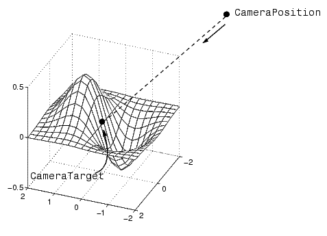
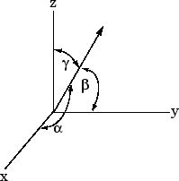
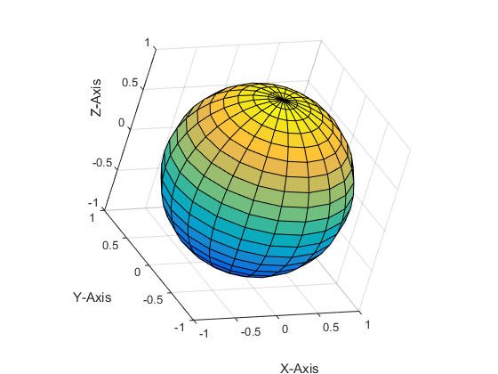

Low-Level Camera Properties
Camera Properties You Can Set
Camera graphics is based on a group of axes properties that control the position and orientation of the camera.
In general, the camera commands, such as campos, camtarget, and camup, make it unnecessary to access these properties directly.
Property | Description |
|---|---|
CameraPosition | Specifies the location of the viewpoint in axes units. |
CameraPositionMode | In |
CameraTarget | Specifies the location in the axes pointed to by the
camera. Together with the |
CameraTargetMode | In |
CameraUpVector | The rotation of the camera around the viewing axis is defined by a vector indicating the direction taken as up. |
CameraUpVectorMode | In |
CameraViewAngle | Specifies the field of view of the "lens." If you specify a value for CameraViewAngle, MATLAB does not stretch-the axes to fit the figure. |
CameraViewAngleMode | In Setting
|
Projection | Selects either an orthographic or perspective projection. |
Default Viewpoint Selection
When all the camera mode properties are set to auto (the
default), MATLAB automatically controls the view, selecting appropriate values based on
the assumption that you want the scene to fill the position rectangle (which is
defined by the width and height components of the axes Position property).
By default, MATLAB
Sets the
CameraPositionso the orientation of the scene is the standard MATLAB 2-D or 3-D view (see theviewcommand)Sets the
CameraUpVectorso the y-direction is up for 2-D views and the z-direction is up for 3-D viewsSets the
CameraViewAngleto the minimum angle that makes the scene fill the position rectangle (the rectangle defined by the axesPositionproperty)
This default behavior generally produces desirable results. However, you can change these properties to produce useful effects.
Moving In and Out on the Scene
You can move the camera anywhere in the 3-D space defined by the axes. The camera continues to point towards the target regardless of its position. When the camera moves, MATLAB varies the camera view angle to ensure the scene fills the position rectangle.
Moving Through a Scene
You can create a fly-by effect by moving the camera through the scene. To do this,
continually change CameraPosition property, moving it toward
the target. Because the camera is moving through space, it turns as it moves
past the camera target. Override the MATLAB automatic resizing of the scene each time you move the camera by
setting the CameraViewAngleMode to
manual.
If you update the CameraPosition and the
CameraTarget, the effect is to pass through the scene
while continually facing the direction of movement.
If the Projection is set to
perspective, the amount of perspective distortion
increases as the camera gets closer to the target and decreases as it gets
farther away.
Example — Moving Toward or Away from the Target
To move the camera along the viewing axis, you need to calculate new
coordinates for the CameraPosition property. This is
accomplished by subtracting (to move closer to the target) or adding (to move
away from the target) some fraction of the total distance between the camera
position and the camera target.
The function movecamera calculates a new
CameraPosition that moves in on the scene if the argument
dist is positive and moves out if dist
is negative.
function movecamera(dist) %dist in the range [-1 1] set(gca,'CameraViewAngleMode','manual') newcp = cpos - dist * (cpos - ctarg); set(gca,'CameraPosition',newcp) function out = cpos out = get(gca,'CameraPosition'); function out = ctarg out = get(gca,'CameraTarget');

Setting the CameraViewAngleMode to
manual can cause an abrupt change in the aspect
ratio.
Making the Scene Larger or Smaller
Adjusting the
CameraViewAngle property makes the view of the scene larger or
smaller. Larger angles cause the view to encompass a larger area, thereby making the
objects in the scene appear smaller. Similarly, smaller angles make the objects
appear larger.
Changing CameraViewAngle makes the scene larger or smaller
without affecting the position of the camera. This is desirable if you want to zoom in without moving the viewpoint past objects that will then no
longer be in the scene (as could happen if you changed the camera position). Also,
changing the CameraViewAngle does not affect the amount of
perspective applied to the scene, as changing CameraPosition does
when the figure Projection property is set to
perspective.
Revolving Around the Scene
You can use the view command to revolve the viewpoint about the
z-axis by varying the azimuth, and about the azimuth by
varying the elevation. This has the effect of moving the camera around the scene
along the surface of a sphere whose radius is the length of the viewing axis. You
could create the same effect by changing the CameraPosition, but
doing so requires you to perform calculations that MATLAB performs for you when you call view.
For example, the function orbit moves the camera
around the
scene.
function orbit(deg) [az, el] = view; rotvec = 0:deg/10:deg; for i = 1:length(rotvec) view([az+rotvec(i) el]) drawnow end
Rotation Without Resizing
When CameraViewAngleMode is auto,
MATLAB calculates the CameraViewAngle so that the scene is
as large as can fit in the axes position rectangle. This causes an apparent size
change during rotation of the scene. To prevent resizing during rotation, you need
to set the CameraViewAngleMode to manual
(which happens automatically when you specify a value for the
CameraViewAngle property). To do this in the
orbit function, add the statement
set(gca,'CameraViewAngleMode','manual')
Rotation About the Viewing Axis
You can change the orientation of the scene by specifying the direction defined as
up. By default, MATLAB defines up as the y-axis in
2-D views (the CameraUpVector is [0 1 0])
and the z-axis for 3-D views (the
CameraUpVector is [0 0 1]). However, you
can specify up as any arbitrary direction.
The vector defined by the CameraUpVector property forms one
axis of the camera's coordinate system. Internally, MATLAB determines the actual orientation of the camera up vector by
projecting the specified vector onto the plane that is normal to the camera
direction (i.e., the viewing axis). This simplifies the specification of the
CameraUpVector property, because it need not lie in this
plane.
In many cases, you might find it convenient to visualize the desired up vector in terms of angles with respect to the axes x-, y-, and z-axis. You can then use direction cosines to convert from angles to vector components. For a unit vector, the expression simplifies to

where the angles α, β, and γ are specified in degrees.
XComponent = cos(α*(pi/180));
YComponent = cos(β*(pi/180));
ZComponent = cos(γ*(pi/180));
Consult a mathematics book on vector analysis for a more detailed explanation of direction cosines.
Calculating a Camera Up Vector
To specify an up vector that makes an angle of 30° with the z-axis and lies in the y-z plane, use the expression
upvec =
[cos(90*(pi/180)),cos(60*(pi/180)),cos(30*(pi/180))];
and then set the CameraUpVector property.
set(gca,'CameraUpVector',upvec)
Drawing a sphere with this orientation produces
